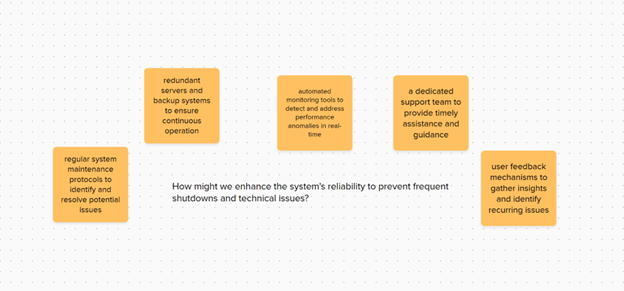

Engaging in the problem-solving process has been an enriching experience, offering valuable insights into user experience, ideation, and solution implementation. Initially, I identified a personal problem with the Oakville Transit App, recognizing its broader implications for my daily routine and well-being. This problem, coupled with observations from interviews and online ethnography, allowed me to understand the multifaceted nature of user experiences and frustrations.
Throughout the process, I learned the importance of framing the problem effectively, as evidenced by the "How might we" statement and Point of View (POV) statement. These tools provided clarity and direction, guiding my brainstorming towards relevant and impactful solutions. Employing divergent thinking techniques allowed me to explore a wide range of potential solutions, covering various aspects of the issue. This approach encouraged inclusivity and collaboration, ensuring that all ideas were considered and recorded.
In evaluating and selecting the most promising ideas, I prioritized user-centric solutions that directly addressed identified needs and frustrations. This criteria ensured that the selected ideas aligned with the problem statement and were feasible within the context of Sheridan College's student center platform. By considering factors such as impact, feasibility, and user-centrality, I was able to identify solutions with the potential to significantly enhance the system's reliability and user experience.
One area for improvement in my process could be to further explore the feasibility and implementation details of selected ideas. While I outlined potential solutions, such as establishing a dedicated online support team, I could delve deeper into the practical steps required to prototype and test these ideas effectively. Additionally, incorporating user feedback more comprehensively throughout the process could enhance the relevance and effectiveness of proposed solutions.
Moving forward, the skills and insights gained from this problem-solving process will undoubtedly influence my approach to future projects. I recognize the importance of empathy, creativity, and iterative testing in driving meaningful innovation. As I embark on the final project in this class, I will apply these lessons learned, ensuring a thoughtful and user-centric approach to problem-solving. By leveraging a combination of data-driven insights, divergent thinking techniques, and user feedback, I aim to develop solutions that address real-world problems effectively and ethically.
Pick a location to observe in your community. It could be a park, grocery store, workplace
, during your commute, or even within your home. Look for a problem that is complex and
ambiguous and would be a good candidate for a problem-solving methodology.
Record what takes place when you notice the problem.
Describe your observations, along with proof that you've done the activity (a picture of your
handwritten field note, your transcript, a picture of the issue, etc.). Refrain from identifying
specific individuals and strive to preserve confidentiality. Include the following:
• Who experiences the problem
• Where and when you witnessed the problem
• Why do you think it is a problem worth solving
The Oakville Transit App is an app published by Oakville Transit. It isn't a navigation app but a bus-tracking app which I find difficult to
understand how it functions even though I consider myself to be quite tech-savvy (frontend developer background and I'm also a tech
lover). This app took a lot longer than I would like to get used to but that is not a major problem, the major problem for me lies in the fact
that even though the bus tracking feature of the app works fine most of the time. The estimated arrival time of the bus is not consistent
at all.
The app is supposed to show the estimated arrival time for the selected stop, but from time to time it will not show the estimated arrival
time of the next bus even though after checking an official schedule from Oakville there are supposed to be more buses arriving at
the time. This causes me anxiety, frustration, and time during planning the commute. Especially, during this winter semester when exposure
to unnecessary cold air can cause many health problems which can affect my academic performance.
As mentioned above, I think this problem is worth solving because it can cause many health problems which can affect my academic
performance. Solving this problem will help improve my anxiety during travel along with my workflow since I don't have to spend too
much time researching and switching between too many applications. Solving this problem can also help prevent the risk of getting sick
due to exposure to low temperatures during this winter semester.
I chose this particular problem because I find this problem to be quite significant in terms of improving my daily life routine, workflow,
and help decreasing the risks of getting sick in a specific season.
Note the key insights gained from the interviews, including direct quotes when possible. This can be in text form, or an image of sticky notes/handwritten notes.
The student's experience with the Sheridan Student Center was largely negative, characterized by several issues. Firstly, residents were given priority in the selection processes, leading to dissatisfaction among non-resident students. Additionally, frequent shutdowns of the tab system caused frustration. Difficulty in accessing classes with friends heightened anxiety levels. Suggestions for improvement included a more accessible UI design and better management of web traffic. Overall, the student identified a need for increased fairness, reliability, and usability within the Sheridan Student Center.
I find the experience of conducting a semi-structured interview to be a bit difficult, I think it requires quite a bit of communication skill to be able to extend or dive deeper into a participant's personal answer. The interview shows the participant’s perspective on the subject matter and might show a new way or approach that might lead to a better human-centric way to counter or handle the problem.
Utilizing online posts, memes, and other primary content is a valuable strategy in the design process. By exploring digital platforms, we tap into a vast pool of user-generated content that reflects diverse opinions, sentiments, and cultural nuances related to the problem.
Search online for memes, posts or comments related to the identified problem. This should be primary content, meaning it is not an article or published resource.
Post 2-3 screenshots of memes or posts that provide insights.
Online ethnography complements the understanding from interviews by providing a broader perspective on the experiences and sentiments of a larger online community. While interviews offer in-depth insights into individual experiences, online ethnography allows for the observation of common themes, perspectives, and trends across a wider range of users.
An affinity map is a visual tool used in the problem-solving process to organize and categorize large amounts of data, such as insights from interviews or observations. Typically created on a large surface or digitally, the map consists of grouped notes or cards representing individual ideas or observations. By clustering related information together, an affinity map helps reveal patterns, themes, and connections within the data.
Post a photo or screenshot of the completed affinity map.
This theme remains the highest ranked as it directly impacts users' ability to utilize the platform and complete necessary tasks, causing immediate frustration and disruption.
Understanding user frustration and their need for prompt resolution is crucial, reflecting the emotional impact of technical issues. This theme closely follows technical challenges due to its importance in maintaining user satisfaction and engagement.
System performance and design are ranked slightly lower but still significant. Improving these aspects can enhance long-term usability and satisfaction, though they may not directly address immediate technical issues or user frustration.
Creating the affinity map provided valuable insights into the multifaceted nature of the problem. As I organized and categorized the data gathered from interviews and online ethnography, distinct themes emerged, including technical challenges, user frustration, and critiques of system performance and design. Seeing these themes visually represented helped me understand the interconnectedness of various issues and the importance of addressing them comprehensively. It highlighted the significance of not only resolving technical issues but also prioritizing user satisfaction and system usability. Overall, the process of creating the map deepened my perception of the problem by revealing its underlying complexities and guiding the direction for potential solutions.
A Point of View (POV) statement is a concise and user-centric articulation of a problem framed from the perspective of the intended user. It serves as a guiding statement to maintain focus on the user experience throughout the problem-solving process.
How Might We (HMW) questions are open-ended queries that invite creative exploration and ideation by challenging teams to consider various potential solutions. These questions encourage divergent thinking and help reframe problems into opportunities for innovative problem-solving.
Write your finalized Point of View statement and How Might We question.
"For students at Sheridan College, using the student center platform is frustrating due to technical problems, unfair priority allocation, and difficulty coordinating class schedules with friends. They want a system that's fair, reliable, and easy to use, making enrollment and accessing services stress-free."
How might we enhance the system's reliability to prevent frequent shutdowns and technical issues?
I approached the problem from various angles and considered different aspects of the user experience and potential solutions from different sources such as data gathered from an interview with students who regularly use my student center along with online ethnography such as a post from Sheridan Reddit about the feedback and issue with the website.
An image of your ideation session
Using the provided "How might we" statement and POV, let's engage in a divergent thinking session to brainstorm ideas for enhancing the system's reliability. Here's a range of potential solutions:
In conducting the ideation session, I found that framing the problem with a clear "How might we" statement effectively guided my brainstorming towards enhancing system reliability. Employing divergent thinking techniques allowed me to generate a broad spectrum of solutions, covering various aspects of the issue. Recording all ideas ensured inclusivity and collaboration.
The 1-2 top-ranked ideas with brief justifications.
Assessing the potential impact of each idea on enhancing system reliability and addressing user frustrations.
Evaluating the practicality and resources required to implement each idea within the context of Sheridan College's student center platform.
Considering the cost implications of implementing each idea relative to its expected benefits.
Prioritizing ideas that directly address user needs and preferences, such as timely assistance and proactive issue resolution.
This idea was chosen for its direct focus on providing timely assistance and guidance to users encountering technical difficulties, directly addressing one of the primary frustrations outlined in the POV statement.
This idea allows for gathering insights directly from users to identify recurring issues, enabling proactive resolution and continuous improvement of the system's reliability and usability.
In evaluating the ideas, I used criteria that focused on addressing user needs, practicality of implementation, and potential impact. This criteria served me well by ensuring that the selected ideas directly aligned with the identified problem and were feasible within the context of Sheridan College's student center platform. By prioritizing user-centric solutions and considering factors such as cost-effectiveness and feasibility, I was able to identify the most promising ideas that have the potential to significantly enhance the system's reliability and user experience.
We prototype or test ideas to gain tangible, real-world insights into the viability, user experience, and potential challenges of a concept. This iterative process allows us to refine and optimize solutions, ensuring they effectively address user needs and perform well in practical scenarios.
Description, sketches, or photos of the prototype or testing idea.
This idea was chosen for its direct focus on providing timely assistance and guidance to users encountering technical difficulties, directly addressing one of the primary frustrations outlined in the POV statement. Sheridan already provided support via the office of registration but this help isn't available 24/7 and from my personal experience as an international student who had to deal with the student center while I was not in Canada I find it to be a tremendous and uncomfortable experience to contact the office.
To prototype the idea of establishing a dedicated online support team, I would start by selecting a small team of support agents trained to handle technical issues and provide guidance to students. I would then develop an online platform or chatbot accessible through Sheridan College's student center website, allowing students to easily reach out for assistance at any time. The prototype would involve testing the responsiveness and effectiveness of the support team in addressing user queries and technical difficulties. Additionally, I would collect feedback from students about their experience with the online support service to identify areas for improvement.
To evaluate the success of the idea, I would look for feedback and metrics indicating improved user satisfaction and reduced frustration with the student center platform. Metrics such as the average response time to user inquiries, the percentage of issues resolved satisfactorily, and overall user satisfaction ratings would be key indicators of the online support team's effectiveness. Additionally, monitoring the frequency of technical difficulties reported by students and comparing it to pre-implementation levels would help assess the impact of the dedicated online support service on system reliability and user experience.